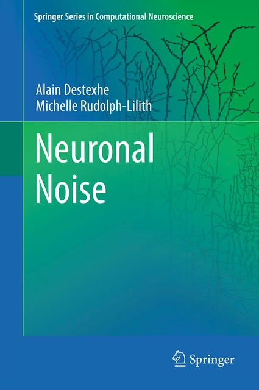

Neuronal Noise
Springer Series in Computational Neuroscience, Vol. 8
Hardcover, ISBN 978-0-387-79019-0
2012, XVIII, 458 p. 203 illus., 1 in color
Neuronal Noise on Springer's Website
Neuronal Noise on Amazon
Springer Series in Computational Neuroscience, Vol. 8
Hardcover, ISBN 978-0-387-79019-0
2012, XVIII, 458 p. 203 illus., 1 in color
Neuronal Noise on Springer's Website
Neuronal Noise on Amazon

About this Book
Neuronal Noise combines experimental, theoretical and computational results to show how noise is inherent to neuronal activity, and how noise can be important for neuronal computations. The book covers many aspects of noise in neurons, with an emphasis on the largest source of noise: synaptic noise. It provides students and young researchers with an overview of the important methods and concepts that have emerged from research in this area. It also provides the specialist with a summary of the large body of sometimes contrasting experimental data, and different theories proposed to explore the computational power that various forms of "noise" can confer to neurons.
Table of Contents
- Chapter 1: Introduction
- Chapter 2: Basics
- Chapter 3: Synaptic noise
- Chapter 4: Models of synaptic noise
- Chapter 5: Integrative properties in the presence of noise
- Chapter 6: Recreating synaptic noise using dynamic-clamp
- Chapter 7: The mathematics of synaptic noise
- Chapter 8: Analyzing synaptic noise
- Chapter 9: Case studies
- Chapter 10: Conclusions and perspectives
- Appendix A: Numerical integration of stochastic differential equations
- Appendix B: Distributed Generator Algorithm
- Appendix C: The Fokker-Planck formalism
- Appendix D: The RT-NEURON interface for dynamic-clamp
- References
- Index